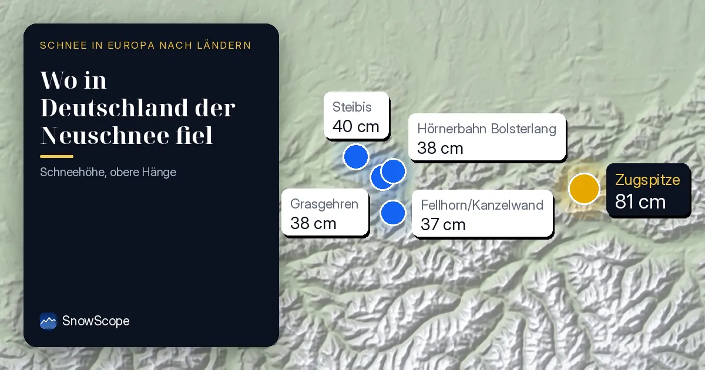
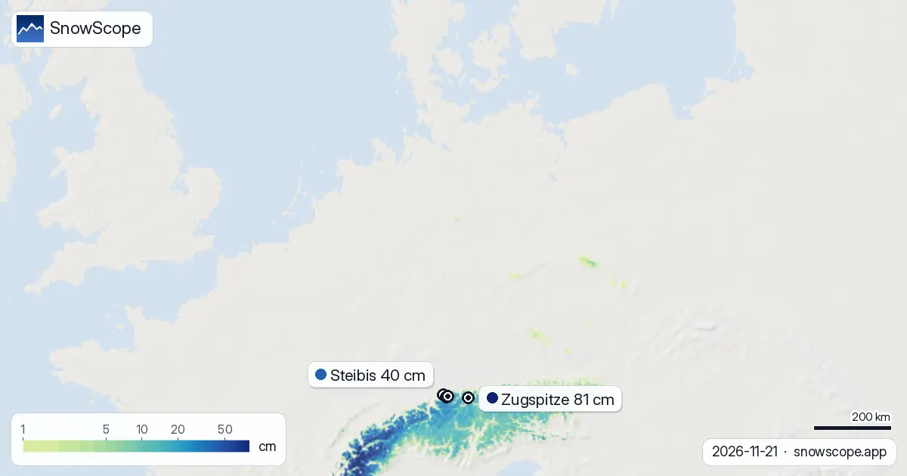

Wo in Deutschland der Neuschnee fiel: 39 cm in den Allgäuer Alpen
Die vergangenen drei Tage brachten sehr unterschiedliche Schneehöhen in verschiedene Teile Deutschlands. Die Allgäuer Alpen erwischte der schwerste Schneefall mit 39 cm, während die Bayrischen Alpen 31 cm erhielten und der Schwarzwald nur 16 cm.
Die Live-Schneeprognose für Zugspitze in der SnowScope-AppSchneehöhen, Pulverschnee-Alarme und 3D-Karte, gratis.
Drei Gebirgszüge, drei Schneemengen
Wenn ich in Hochgebirgen arbeite, lerne ich schnell, dass Stürme nicht gleichmäßig verteilt sind. Das gleiche System, das von Westen herankommt, trifft zuerst auf höhere Gebirgszüge und am stärksten, schwächt sich dann ab, wenn es nach Osten und nach unten wandert. Das ist auch hier in den vergangenen 72 Stunden passiert. SnowScope zeigt, dass die Allgäuer Alpen 39 cm Neuschnee erhielten – der klare Sieger über ganz Deutschland. Die Bayrischen Alpen, weiter südlich und etwas niedriger, bekamen 31 cm ab. Und der Schwarzwald, deutlich niedriger und weiter nördlich, verzeichnete nur 16 cm. Dieses Muster von Gebirgszug zu Gebirgszug verrät dir, wo du jetzt die besten Bedingungen findest.
Die Allgäuer Alpen erstrecken sich über die Grenze zwischen Bayern und Baden-Württemberg. Ihre Gipfel und Grate zwingen Luftmassen nach oben und drücken mehr Feuchtigkeit aus dem System heraus. Die Bayrischen Alpen, zentriert rund um die Zugspitze und die hohen Gipfel nahe Österreich, bekamen auch starken Schnee, aber etwas weniger. Der Schwarzwald, ein niedriger und mehr gerundeter Gebirgszug im Nordwesten, lag am Ende der Sturmtrasse. Bis das System dort ankam, hatte es seine Schneemenge bereits an die höher gelegenen Gebiete abgegeben.
| Skigebiet | Schneehöhe | Neuschnee, 72 h | Erwartet, nächste Tage | Gipfel |
|---|---|---|---|---|
| Zugspitze | 81 cm | 31 cm | 29 cm | 2.627 m |
| Steibis | 40 cm | 33 cm | 29 cm | 1.704 m |
| Grasgehren | 38 cm | 32 cm | 30 cm | 1.674 m |
| Hörnerbahn Bolsterlang | 38 cm | 32 cm | 30 cm | 1.662 m |
| Fellhorn/Kanzelwand | 37 cm | 33 cm | 33 cm | 1.965 m |

Was fiel und wo es liegt
Über 72 Stunden betrug das Maximum 18 cm über eine Region von etwa 2.200 km². Das klingt nach einer kleinen Fläche, aber es ist der Streifen, in dem der Schnee dick genug war, um echte Tiefe aufzubauen. Die Zugspitze, Deutschlands höchstes Skigebiet mit 2.627 m, liegt jetzt unter 81 cm Schnee. Diese Tiefe wuchs in den vergangenen 72 Stunden um 31 cm. Steibis und Grasgehren, beide im Allgäu, legten 32 bis 33 cm zu. Hörnerbahn Bolsterlang und Fellhorn/Kanzelwand gewannen jeweils auch rund 32 bis 33 cm.
Die Schneegrenze liegt heute bei 1.100 m. Darunter liegt praktisch nichts. Zwischen 1.000 und 1.500 m findest du durchschnittlich nur etwa 4 cm und die Schneedecke bedeckt nur 70 Prozent des Bodens. Bei 1.500 bis 2.000 m springt die Tiefe auf 16 cm und die Bedeckung ist vollständig. Bei 2.000 bis 2.500 m liegt im Durchschnitt 25 cm. Das ist Frühjahrschnee auf dünnem Untergrund. Wo Gelände felsig oder steil ist, fährst du wahrscheinlich noch über Felsen oder kahle Stellen.

Beste Bedingungen jetzt in der Höhe
Der beste Schnee findet sich über 1.500 m. Die Zugspitze hat die zuverlässigste Grundlage, weil sie mit 2.627 m deutlich über der Schneegrenze liegt. Ihre 81 cm sind echter, durchgehender Schnee. Die Allgäuer Skigebiete wie Steibis, Grasgehren und Hörnerbahn Bolsterlang liegen alle um 1.600 bis 1.700 m auf ihren Gipfeln. Sie haben jetzt 38 bis 40 cm. Fellhorn/Kanzelwand erreicht 1.965 m und hält 37 cm. Diese Zahlen sind solid für Ende November, aber denk daran: Das ist Neuschnee auf altem, dünnem Untergrund. In tieferen Lagen, 500 bis 1.000 m, liegt praktisch kein Schnee. Selbst die Zone zwischen 1.000 und 1.500 m ist fleckig. Wenn der Gipfel eines Skigebiets unter 1.500 m liegt, solltest du mit lückenhafter Bedeckung rechnen.
Mehr Schnee kommt heute Nacht und morgen
Das System, das diesen Neuschnee brachte, ist noch nicht fertig. Morgen, 22.11.2026, ist der schneereichste Tag in der Prognose. Wir erwarten 14 cm über die Region verteilt. In den nächsten drei Tagen erreicht das Prognose-Maximum 20 cm. In den nächsten sieben Tagen sind 26 cm möglich. Das System bewegt sich langsam, und die gleichen Gebirgszüge, die in den vergangenen 72 Stunden die meisten Schneemengen erhielten, werden wahrscheinlich mehr vom kommenden Schnee bekommen.
Wie diese Woche sich vergleicht
Vor einer Woche, am 14.11.2026, lagen 5.700 km² Deutschlands unter Schnee. Heute sind es 3.050 km². Dieser Rückgang sieht groß aus, aber er spiegelt das natürliche Schmelzen und Abfall von Frühjahrschnee wider, wenn der Boden noch warm ist. Was zählt, ist, dass Neuschnee kam und er kam in die Höhe. Nur etwa 7 Prozent der erfassten Fläche sind jetzt weiß, aber an den hohen Hängen bauen sich die Bedingungen auf. In der zweiten Dezemberwoche könnte ein weiteres System 5 cm mehr bringen.
Das größere Bild
Österreich, im Osten, liegt vorne mit 56 Prozent Schneebedeckung und 63 cm am Stubaier Gletscher. Die Schweiz, im Süden, liegt gut vorne mit 64 Prozent Bedeckung und 86 cm in Anzère, mit 74 cm möglich in den nächsten sieben Tagen. Deutschland holt auf. Die Allgäuer und Bayrischen Alpen sind jetzt im Spiel. Beobachte die Prognose für 22.11.2026 und darüber hinaus; mehr Schnee ist unterwegs.
Tipps für Skifahrer
- Fahr über 1.500 m, wo Schnee durchgehend und tief ist. Unter 1.500 m ist die Bedeckung dünn und lückenhaft; rechne mit Felsen und kahlen Stellen.
- Die Allgäuer Alpen haben den meisten Schnee. Wenn du die Wahl hast, fahre dorthin oder zur Zugspitze statt zu tieferen Skigebieten.
- Neuschnee auf dünner Grundlage kann Felsen und raues Gelände verbergen. Prüfe vor Abfahrten im freien Gelände das offizielle Lawinenbulletin für deine Region.
- Morgen und die nächsten zwei Tage bringen mehr Schnee. Plane, in der Höhe zu sein, wenn das System ankommt.
- Das ist Frühjahrssaison; bleib auf der Piste und markiertem Gelände. Frühjahrschnee liegt oft ungleichmäßig und kann instabil sein.
Zu diesen Zahlen
Die Schneehöhen der Skigebiete sind der meiste Schnee in den oberen Hängen am angegebenen Tag; es sind Schätzungen für eine Fläche, keine Messung an einem Punkt. Prognosen können sich ändern. Lies vor dem Freeriden immer den offiziellen Lawinenlagebericht.
Diesen Bericht zitieren
Für Forschung, Lehre oder Presse: Zahlen und Grafiken sind unter CC BY 4.0 mit dieser Quellenangabe frei nutzbar.
SnowScope (2026), Wo in Deutschland der Neuschnee fiel: 39 cm in den Allgäuer Alpen, https://snowscope.app/blog/de/2026/11/germany-where-the-snow-fell-21-november-2026.html, abgerufen am 2026-11-21
SnowScope (Atlas Labs). (2026, November 21). Wo in Deutschland der Neuschnee fiel: 39 cm in den Allgäuer Alpen. SnowScope snow reports. https://snowscope.app/blog/de/2026/11/germany-where-the-snow-fell-21-november-2026.html
BibTeX
@misc{snowscope2026germanywherethesnowfell2,
author = {{SnowScope (Atlas Labs)}},
title = {Wo in Deutschland der Neuschnee fiel: 39 cm in den Allgäuer Alpen},
year = {2026},
month = nov,
howpublished = {\url{https://snowscope.app/blog/de/2026/11/germany-where-the-snow-fell-21-november-2026.html}},
note = {Published 2026-11-21 13:33 UTC; accessed 2026-11-21}
}· CC BY 4.0 · Methoden, Daten und Werkzeuge →
Zugspitze: Schnee und Temperatur nach Höhe, dieser Winter vs letzter (Werkzeuge) →
Zugspitze folgen
Gratis: eine Nachricht, wenn Neuschnee kommt, und jeden Morgen die Vorhersage.